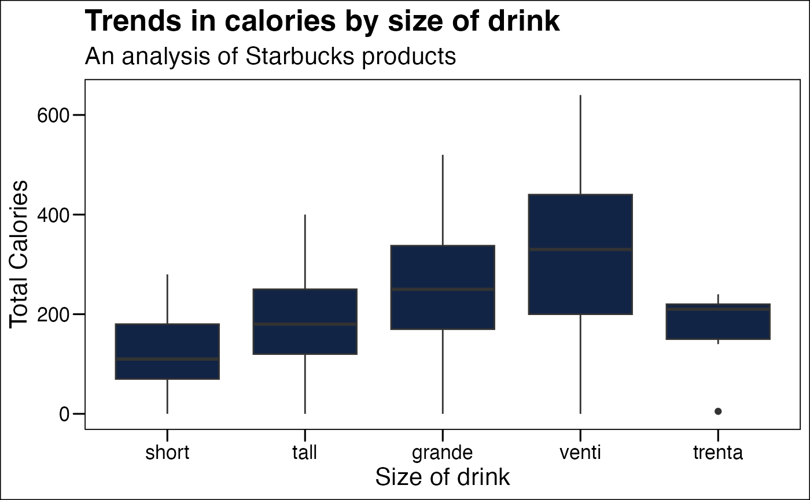
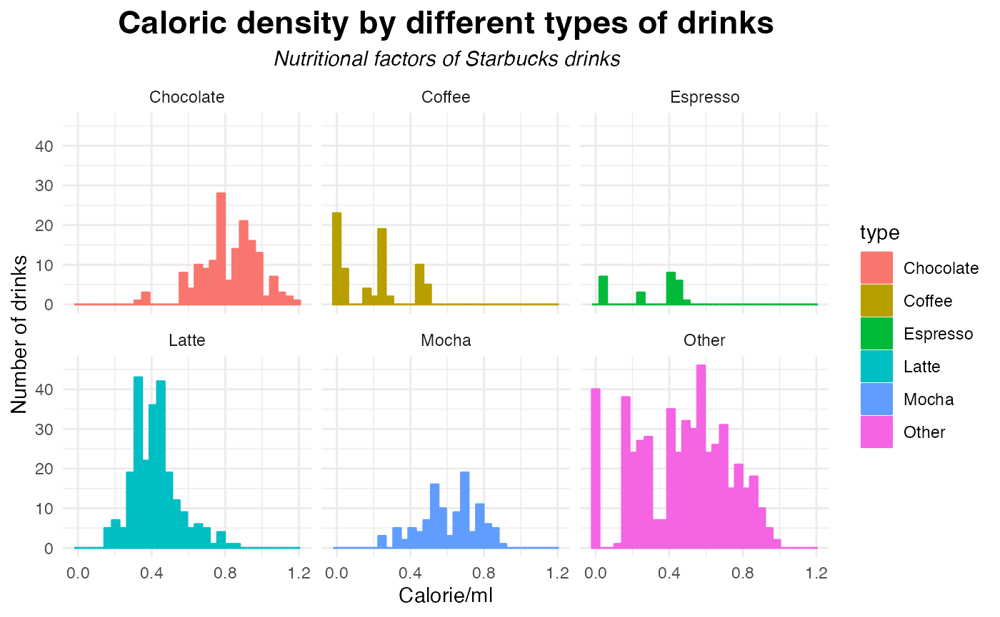
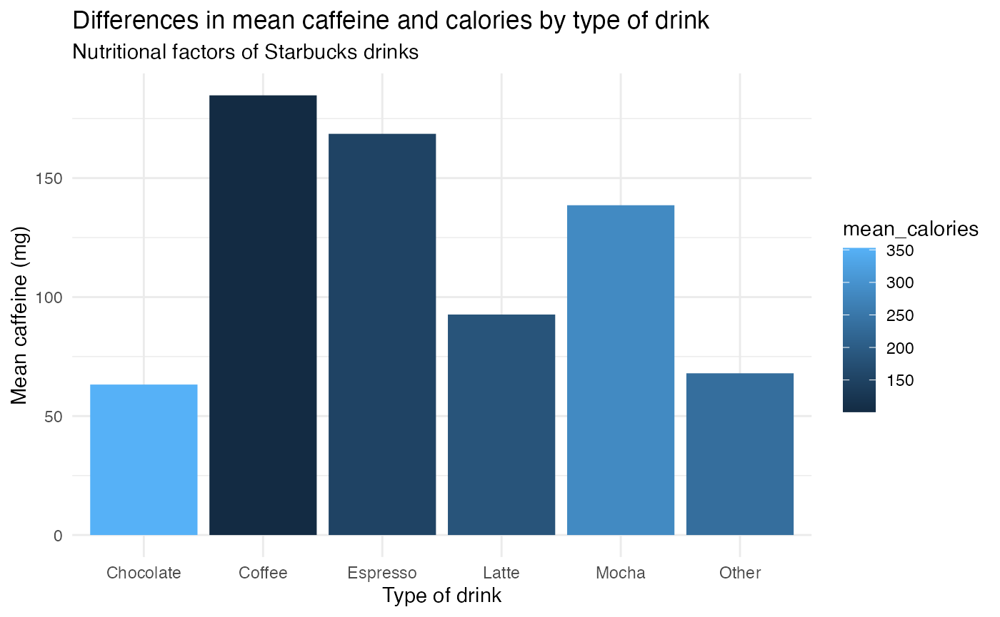

if(!require(tidyverse)){
install.packages("tidyverse",repos='http://cran.us.r-project.org')
library(tidyverse)
}
if(!require(readr)){
install.packages("readr",repos='http://cran.us.r-project.org')
library(readr)
}
if(!require(here)){
install.packages("here",repos='http://cran.us.r-project.org')
library(here)
}
if(!require(purrr)){
install.packages("purrr",repos='http://cran.us.r-project.org')
library(purrr)
}
if(!require(beepr)){
install.packages("beepr",repos='http://cran.us.r-project.org')
library(beepr)
}Introduction
Pick any data set you wish from TidyTuesday to analyze
We will analyze Starbucks data from TidyTuesday
You must describe what is the question you aim to answer with the data and data analysis
We are studying the caloric content of Starbucks drinks. What amount of the relationship between total calories is explained by serving size among different types of drinks at Starbucks AKA the coefficient of determination AKA R-Squared?
You must describe and link to where the original data come from that you chose.You must include a link to a data dictionary for the data or create one inside the webpage. Load the data into R
In this step, you must test if a directory named data exists locally. If it does not, write an R function that creates it programmatically.Saves the data only once (not each time you knit/render the document). Read in the data locally each time you knit/render.
if (!file.exists(here("data", "starbucks.csv"))){
url_csv <- "https://raw.githubusercontent.com/rfordatascience/tidytuesday/master/data/2021/2021-12-21/starbucks.csv"
sauces <- readr::read_csv(url_csv)
}
starbucks <- readr::read_csv('https://raw.githubusercontent.com/rfordatascience/tidytuesday/master/data/2021/2021-12-21/starbucks.csv')Data wrangling
Your analysis must include some form of data wrangling and data visualization.You must use at least six different functions from dplyr, tidyr, lubridate, stringr, or forcats.
starbucks <- starbucks %>%
mutate(`calories/ml` = calories / serv_size_m_l)
starbucks <- starbucks %>%
mutate(`caffeine/ml` = caffeine_mg / serv_size_m_l)
drinks <- starbucks %>%
mutate(type = case_when(
str_detect(product_name, regex("chocolate", ignore_case = TRUE)) ~ "Chocolate",
str_detect(product_name, "Mocha") ~ "Mocha",
str_detect(product_name, regex("coffee", ignore_case = TRUE)) ~ "Coffee",
str_detect(product_name, regex("espresso", ignore_case = TRUE)) ~ "Espresso",
str_detect(product_name, "Latte") ~ "Latte",
TRUE ~ "Other"
))
drinks <- starbucks %>%
mutate(type = case_when(
str_detect(product_name, regex("chocolate", ignore_case = TRUE)) ~ "Chocolate",
str_detect(product_name, "Mocha") ~ "Mocha",
str_detect(product_name, regex("coffee", ignore_case = TRUE)) ~ "Coffee",
str_detect(product_name, regex("espresso", ignore_case = TRUE)) ~ "Espresso",
str_detect(product_name, "Latte") ~ "Latte",
TRUE ~ "Other"
)); beep_on_error(expr, sound = 1)Remove rows with cappuccino sizes
drinks <- drinks[!(
drinks$size == "solo" |
drinks$size == "doppio" |
drinks$size == "triple" |
drinks$size == "quad" |
drinks$size == "1 scoop" |
drinks$size == "1 shot"), ]Now make sizes into a factor using forcats
Now check the levels of the drink sizes
levels(drinks$size)
#> [1] "short" "tall" "grande" "venti" "trenta"You must use at least two functions from purrr.
rsquared <- drinks %>%
filter(!is.na(calories) & !is.na(serv_size_m_l)) %>%
group_by(type) %>%
filter(n() > 2) %>%
ungroup() %>%
split(.$type) %>%
map(safely(~lm(calories ~ serv_size_m_l, data = .))) %>%
map("result") %>%
map_dfr(~if (is.null(.x)) { NA_real_ } else { summary(.x)$r.squared })
rsquared <- drinks %>%
filter(!is.na(calories) & !is.na(serv_size_m_l)) %>%
group_by(type) %>%
filter(n() > 2) %>%
ungroup() %>%
split(.$type) %>%
map(safely(~lm(calories ~ serv_size_m_l, data = .))) %>%
map("result") %>%
map_dfr(~if (is.null(.x)) { NA_real_ } else { summary(.x)$r.squared });
beep_on_error(expr, sound = 1)Above code via ChatGPT
report <- drinks %>%
group_by(type) %>%
summarize(mean_calories = mean(calories, na.rm = TRUE),
mean_caffeine = mean(caffeine_mg, na.rm = TRUE),
mean_serv_size_ml = mean(serv_size_m_l, na.rm = TRUE))Above code via ChatGPT
Your analysis should include at least three plots with you using at least three different geom_() functions from ggplot2 (or another package with geom_() functions).
Plots should have titles, subtitles, captions, and human-understandable axis labels. At least one plot should using a type of faceting (facet_grid() or facet_wrap()).
Plot 1
ggplot(drinks) +
aes(x = size, y = calories) +
geom_boxplot(fill = "#112446") +
labs(x = "Size of drink",
y = "Total Calories", title = "Trends in calories by size of drink", subtitle = "An analysis of Starbucks products") +
ggthemes::theme_base()
Plot 2
ggplot(drinks) +
aes(x = `calories/ml`, fill = type, colour = type) +
geom_histogram(bins = 30L) +
scale_fill_hue(direction = 1) +
scale_color_hue(direction = 1) +
labs(
x = "Calorie/ml",
y = "Number of drinks",
title = "Caloric density by different types of drinks",
subtitle = "Nutritional factors of Starbucks drinks"
) +
theme_minimal() +
theme(
plot.title = element_text(size = 17L,
face = "bold",
hjust = 0.5),
plot.subtitle = element_text(face = "italic",
hjust = 0.5)
) +
facet_wrap(vars(type))
Plot 3
ggplot(report, aes(x = type, y = mean_caffeine, fill = mean_calories)) +
geom_col() +
scale_fill_gradient() +
labs(
x = "Type of drink",
y = "Mean caffeine (mg)",
title = "Differences in mean caffeine and calories by type of drink",
subtitle = "Nutritional factors of Starbucks drinks"
) +
theme_minimal()
Apply at least 2 functions from the R package in the vignette.
beep(sound = 3)beep() and beep_on_error() are used above. Relevant code chunks were changed to eval=FALSE as file would not knit with beepr functions.
Summary
Summarize and interpret the results in 1-2 sentences.
This analysis seeks to describe the relationship between total calories is explained by serving size among different types of drinks at Starbucks AKA the coefficient of determination AKA R-Squared?
print(rsquared)
#> # A tibble: 1 × 6
#> Chocolate Coffee Espresso Latte Mocha Other
#> <dbl> <dbl> <dbl> <dbl> <dbl> <dbl>
#> 1 0.711 0.269 0.274 0.461 0.535 0.226Chocolate drinks have the highest R-squared for calories by serving size, indicating that the amount of variance explained by the volume is highest among chocolate type drinks at Starbucks.
Based on the plots we also see differences in the mean caffeine and calories by types of drinks.
At the end of the data analysis, list out each of the functions you used from each of the packages (dplyr, tidyr, ggplot2, etc) to help the TA with respect to making sure you met all the requirements described above.
Functions used
dplyr::group_by
forcats::levels
forcats::as_factor
dplyr::filter
stringr::str_detect
purrr::map_dfr
dplyr::mutate
Sources:
Chatgpt. ChatGPT. (n.d.). https://openai.com/chatgpt
https://stackoverflow.com/questions/25654845/how-can-i-create-a-text-box-for-a-note-in-markdown